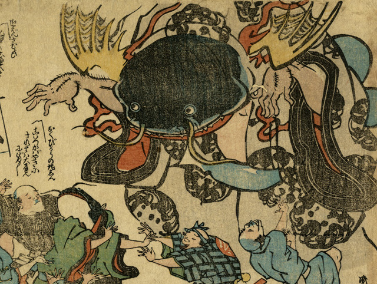

両腕を前に垂らし、威嚇するように人々を睨みつける巨大な鯰。首の後には、黄色い翼のようなものが生えている。着物を着て青い帯をつけている。
出典：親書誌：U426_nichibunken_0327：［庶民を襲う大鯰］；ショミン オ オソウ オオナマズ／日付：2014／資源識別子：U426_nichibunken_0327_0001_0000
Copyright (c)2010- International Research Center for Japanese Studies, Kyoto, Japan. All rights reserved.